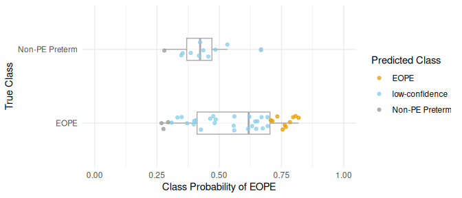

if(!requireNamespace("BiocManager", quietly = TRUE))
install.packages("BiocManager")
BiocManager::install("planet")To infer cell composition on placental villi DNAm samples, we can
need to use placental reference cpgs (Yuan
2021). These are provided in this package as
plCellCpGsThird and plCellCpGsFirst for third
trimester (term) and first trimester samples, respectively.
In this example we are using term villi DNAm data, so we first load
the reference cpgs plCellCpGsThird. This is a data frame of
600 cpgs, with mean methylation levels for each cell type.
# cell deconvolution packages
library(minfi)
library(EpiDISH)
# data wrangling and plotting
library(dplyr)
library(ggplot2)
library(tidyr)
library(planet)
# load example data
data("plBetas")
data("plCellCpGsThird")
head(plCellCpGsThird)## Trophoblasts Stromal Hofbauer Endothelial nRBC
## cg10590657 0.1014098 0.9345796 0.8655285 0.8963641 0.8448382
## cg14923398 0.1282030 0.8902107 0.9036769 0.9383641 0.9508709
## cg05348366 0.1305697 0.9519820 0.8803082 0.9065136 0.9278057
## cg17907628 0.1215249 0.9278777 0.8727841 0.8914412 0.9143601
## cg26799656 0.1259953 0.9482014 0.8803863 0.8791004 0.9010419
## cg11862144 0.1561991 0.9430855 0.9114967 0.9341671 0.9647331
## Syncytiotrophoblast
## cg10590657 0.05460441
## cg14923398 0.05383193
## cg05348366 0.06546727
## cg17907628 0.05325227
## cg26799656 0.06823985
## cg11862144 0.06044207After our reference cpg data is loaded, we can estimate cell composition by applying either the Constrained Projection approach implemented by the R packages minfi or EpiDISH, or a non-constrained approach by EpiDish. I demonstrate how to do both.
houseman_estimates <- minfi:::projectCellType(
plBetas[rownames(plCellCpGsThird), ],
plCellCpGsThird,
lessThanOne = FALSE
)
head(houseman_estimates)## Trophoblasts Stromal Hofbauer Endothelial nRBC
## GSM1944936 0.1091279 0.04891919 0.000000e+00 0.08983998 0.05294062
## GSM1944939 0.2299918 0.00000000 6.680983e-20 0.07888007 0.03374149
## GSM1944942 0.1934287 0.03483540 0.000000e+00 0.09260353 0.02929310
## GSM1944944 0.2239896 0.06249135 1.608645e-03 0.11040693 0.04447951
## GSM1944946 0.1894152 0.07935955 0.000000e+00 0.10587439 0.05407587
## GSM1944948 0.2045124 0.07657717 0.000000e+00 0.09871149 0.02269798
## Syncytiotrophoblast
## GSM1944936 0.6979477
## GSM1944939 0.6377822
## GSM1944942 0.6350506
## GSM1944944 0.5467642
## GSM1944946 0.6022329
## GSM1944948 0.6085825
# robust partial correlations
epidish_RPC <- epidish(
beta.m = plBetas[rownames(plCellCpGsThird), ],
ref.m = plCellCpGsThird,
method = "RPC"
)
# CIBERSORT
epidish_CBS <- epidish(
beta.m = plBetas[rownames(plCellCpGsThird), ],
ref.m = plCellCpGsThird,
method = "CBS"
)## 1## 2## 3
# constrained projection (houseman 2012)
epidish_CP <- epidish(
beta.m = plBetas[rownames(plCellCpGsThird), ],
ref.m = plCellCpGsThird,
method = "CP"
)## 1## 2## 3## 4## 5## 6## 7## 8## 9## 10## 11## 12## 13## 14## 15## 16## 17## 18## 19## 20## 21## 22## 23## 24Below, I demonstrate how we can visually compare the different cell composition estimates.
data("plColors")
# bind estimate data frames and reshape for plotting
bind_rows(
houseman_estimates %>% as.data.frame() %>% mutate(algorithm = "CP (Houseman)"),
epidish_RPC$estF %>% as.data.frame() %>% mutate(algorithm = "RPC"),
epidish_CBS$estF %>% as.data.frame() %>% mutate(algorithm = "CBS"),
epidish_CP$estF %>% as.data.frame() %>% mutate(algorithm = "CP (EpiDISH)")
) %>%
mutate(sample = rep(rownames(houseman_estimates), 4)) %>%
as_tibble() %>%
pivot_longer(
cols = -c(algorithm, sample),
names_to = "component",
values_to = "estimate"
) %>%
# relevel for plot
mutate(component = factor(component,
levels = c(
"nRBC", "Endothelial", "Hofbauer",
"Stromal", "Trophoblasts",
"Syncytiotrophoblast"
)
)) %>%
# plot
ggplot(aes(x = sample, y = estimate, fill = component)) +
geom_bar(stat = "identity") +
facet_wrap(~algorithm, ncol = 1) +
scale_fill_manual(values = plColors) +
scale_y_continuous(
limits = c(-0.1, 1.1), breaks = c(0, 0.5, 1),
labels = scales::percent
) +
theme(axis.text.x = element_text(angle = 90, vjust = 0.5)) +
coord_cartesian(ylim = c(0, 1)) +
labs(x = "", fill = "")Some notes:
minfi::preprocessNoob and
BMIQFor demonstration, I use 24 samples from a placental DNAm dataset
from GEO, (GSE7519),
which contains samples collected in an Australian population. The DNA
methylation data (in betas) can be accessed with
data(plBetas) and corresponding sample information from
data(plPhenoData). Note that for demonstration purposes,
the cpgs have been filtered to a random ~10,000 CpGs, plus the CpGs used
in all of the functions from this package.
## [1] 13918 24
#> [1] 13918 24
head(plPhenoData)| sample_id | sex | disease | gestation_wk | ga_RPC | ga_CPC | ga_RRPC |
|---|---|---|---|---|---|---|
| GSM1944936 | Male | preeclampsia | 36 | 38.46528 | 38.72867 | 38.65396 |
| GSM1944939 | Male | preeclampsia | 32 | 33.09680 | 34.21252 | 32.62763 |
| GSM1944942 | Female | preeclampsia | 32 | 34.32520 | 35.09565 | 33.32502 |
| GSM1944944 | Male | preeclampsia | 35 | 35.50937 | 36.71512 | 35.51295 |
| GSM1944946 | Female | preeclampsia | 38 | 37.63910 | 37.57931 | 36.61721 |
| GSM1944948 | Female | preeclampsia | 36 | 36.77051 | 38.42632 | 36.72150 |
#> # A tibble: 6 x 7
#> sample_id sex disease gestation_wk ga_RPC ga_CPC ga_RRPC
#> <fct> <chr> <chr> <dbl> <dbl> <dbl> <dbl>
#> 1 GSM1944936 Male preeclam~ 36 38.5 38.7 38.7
#> 2 GSM1944939 Male preeclam~ 32 33.1 34.2 32.6
#> 3 GSM1944942 Fema~ preeclam~ 32 34.3 35.1 33.3
#> 4 GSM1944944 Male preeclam~ 35 35.5 36.7 35.5
#> 5 GSM1944946 Fema~ preeclam~ 38 37.6 37.6 36.6
#> 6 GSM1944948 Fema~ preeclam~ 36 36.8 38.4 36.7There are 3 gestational age clocks for placental DNA methylation data from (Lee 2019):
To predict gestational, we load the example data:
plBetas - DNAm data for 24 placental samplesplPhenoData - Matching sample informationTo select the type of clock, we can specify the type
argument in predictAge.
We will apply all three clocks on this data, and add the predicted
age to the sample information data.frame, plPhenoData.
plPhenoData <- plPhenoData %>%
mutate(
ga_RPC = predictAge(plBetas, type = "RPC"),
ga_CPC = predictAge(plBetas, type = "CPC"),
ga_RRPC = predictAge(plBetas, type = "RRPC")
)## 558 of 558 predictors present.## 546 of 546 predictors present.## 395 of 395 predictors present.Note that the number of predictors (CpGs) that were used in our data are printed. It’s important to take note if a significant number of predictive CpGs are missing in your data, as this can affect the predicted gestational age accuracy.
Next, I plot the difference between predicted and reported gestational age, for each of the 3 gestational age predictors.
plPhenoData %>%
# reshape, to plot
pivot_longer(
cols = contains("ga"),
names_to = "clock_type",
names_prefix = "ga_",
values_to = "ga"
) %>%
# plot code
ggplot(aes(x = gestation_wk, y = ga, col = disease)) +
geom_point() +
geom_smooth(method = "lm", se = FALSE) +
facet_wrap(~clock_type) +
theme(legend.position = "top") +
labs(x = "Reported GA (weeks)", y = "Inferred GA (weeks)", col = "")## `geom_smooth()` using formula = 'y ~ x'Before predicting ethnicity You can ensure that you have all features
using the ethnicityCpGs vector:
## [1] TRUE
results <- predictEthnicity(plBetas)## 1860 of 1860 predictors present.| Sample_ID | Predicted_ethnicity_nothresh | Predicted_ethnicity | Prob_African | Prob_Asian | Prob_Caucasian | Highest_Prob |
|---|---|---|---|---|---|---|
| GSM1944959 | Asian | Asian | 0.0123073 | 0.9523544 | 0.0353383 | 0.9523544 |
| GSM1944960 | Caucasian | Caucasian | 0.0156961 | 0.1595213 | 0.8247827 | 0.8247827 |
| GSM1944961 | Asian | Asian | 0.0208421 | 0.8954518 | 0.0837061 | 0.8954518 |
| GSM1944962 | Caucasian | Caucasian | 0.0009276 | 0.0008801 | 0.9981923 | 0.9981923 |
| GSM1944963 | Caucasian | Caucasian | 0.0022635 | 0.0028007 | 0.9949358 | 0.9949358 |
| GSM1944964 | Caucasian | Caucasian | 0.0065973 | 0.0112013 | 0.9822014 | 0.9822014 |
| GSM1944965 | Caucasian | Caucasian | 0.0021578 | 0.0024196 | 0.9954226 | 0.9954226 |
| GSM1944966 | Caucasian | Caucasian | 0.0011397 | 0.0017651 | 0.9970952 | 0.9970952 |
predictEthnicity returns probabilities corresponding to
each ethnicity for each sample (e.g Prob_Caucasian,
Prob_African, Prob_Asian). This applies a
glmnet model described in (Yuan
2019). A final classification is determined in two ways:
Predicted_ethnicity_nothresh - returns a
classification corresponding to the highest class-specific
probability.
Predicted_ethnicity - if the highest class-specific
probability is below 0.75, then the the sample is assigned
an Amibiguous label. This threshold can be adjusted with
the threshold argument. Samples with this label might
require special attention in downstream analyses.
results %>%
ggplot(aes(
x = Prob_Caucasian, y = Prob_African,
col = Predicted_ethnicity
)) +
geom_point(alpha = 0.7) +
coord_cartesian(xlim = c(0, 1), ylim = c(0, 1)) +
scale_x_continuous(labels = scales::percent) +
scale_y_continuous(labels = scales::percent) +
labs(x = "P(Caucasian)", y = "P(African)")
results %>%
ggplot(aes(
x = Prob_Caucasian, y = Prob_Asian,
col = Predicted_ethnicity
)) +
geom_point(alpha = 0.7) +
coord_cartesian(xlim = c(0, 1), ylim = c(0, 1)) +
scale_x_continuous(labels = scales::percent) +
scale_y_continuous(labels = scales::percent) +
labs(x = "P(Caucasian)", y = "P(Asian)")We can’t compare this to self-reported ethnicity as it is unavailable. But we know these samples were collected in Sydney, Australia, and are therefore likely mostly European with some East Asian participants.
table(results$Predicted_ethnicity)##
## Asian Caucasian
## 2 22A note on adjustment in differential methylation analysis
Because ‘Ambiguous’ samples might have different mixtures of ancestries, it might be inadequate to adjust for them as one group in an analysis of admixed populations (e.g. 50/50 Asian/African should not be considered the same group as 50/50 Caucasian/African). One solution would be to simply remove these samples. Another would be to adjust for the raw probabilities-in this case, use only two of the three probabilities, since the third will be redundant (probabilities sum to 1). If sample numbers are large enough in each group, stratifying downstream analyses by ethnicity might also be a valid option.
To calculate the probability of EOPE of placental DNAm chorionic villi samples, we rely on 45 predictive CpGs.
In this example, we load the validation data used in Fernández-Boyano 2023] and estimate the EOPE probability of the samples. Note that the function must be run on a matrix with the full set of CpG probes in either the 450K or 850K arrays - the reason for this is that all 45 predictive CpGs must be present for prediction to be completed.
It is recommended that data is normalized using BMIQ prior to prediction.
Note that samples must be rows and CpGs must be columns. The default threshold for classification used to assign labels is 55%; if the users wishes to use other threshold, different labels can be assigned based on the output probabilities.
library(ExperimentHub)## Loading required package: AnnotationHub## Loading required package: BiocFileCache## Loading required package: dbplyr##
## Attaching package: 'dbplyr'## The following objects are masked from 'package:dplyr':
##
## ident, sql##
## Attaching package: 'AnnotationHub'## The following object is masked from 'package:Biobase':
##
## cache
eh <- ExperimentHub()
query(eh, "eoPredData")## ExperimentHub with 3 records
## # snapshotDate(): 2024-10-24
## # $dataprovider: University of British Columbia
## # $species: Homo sapiens
## # $rdataclass: mixo_splsda, matrix, data.frame
## # additional mcols(): taxonomyid, genome, description,
## # coordinate_1_based, maintainer, rdatadateadded, preparerclass, tags,
## # rdatapath, sourceurl, sourcetype
## # retrieve records with, e.g., 'object[["EH8090"]]'
##
## title
## EH8090 | eoPredModel
## EH8403 | valBMIQ
## EH8404 | valMeta
# download BMIQ normalized 450k data
x_test <- eh[['EH8403']]## eoPredData not installed.
## Full functionality, documentation, and loading of data might not be possible without installing## loading from cache
preds <- x_test %>% predictPreeclampsia()## eoPredData not installed.
## Full functionality, documentation, and loading of data might not be possible without installing
## loading from cache## 45 of 45 predictive CpGs present.## BMIQ normalization is recommended for best results. If choosing other method, it is recommended to compare results to predictions on BMIQ normalized data.Inspect the results:
head(preds)| Sample_ID | EOPE | Non-PE Preterm | PE_Status |
|---|---|---|---|
| GSM2589533 | 0.6699478 | 0.3300522 | EOPE |
| GSM2589535 | 0.7680531 | 0.2319469 | EOPE |
| GSM2589536 | 0.8068395 | 0.1931605 | EOPE |
| GSM2589538 | 0.7843615 | 0.2156385 | EOPE |
| GSM2589540 | 0.3858278 | 0.6141722 | Normotensive |
| GSM2589541 | 0.6488529 | 0.3511471 | EOPE |
# join with metadata
valMeta <- eh[['EH8404']]## eoPredData not installed.
## Full functionality, documentation, and loading of data might not be possible without installing## downloading 1 resources## retrieving 1 resource## loading from cache
valMeta <- left_join(valMeta, preds, by="Sample_ID")
# visualize results
plot_predictions <- function(df, predicted_class_column) {
df %>%
ggplot() +
geom_boxplot(
aes(x = Class, y = EOPE),
width = 0.3,
alpha = 0.5,
color = "darkgrey"
) +
geom_jitter(
aes(x = Class, y = EOPE, color = {{predicted_class_column}}),
alpha = 0.75,
position = position_jitter(width = .1)
) +
coord_flip() +
ylab("Class Probability of EOPE") +
xlab("True Class") +
ylim(0,1) +
scale_color_manual(
name = "Predicted Class",
values = c("#E69F00", "skyblue", "#999999")
) +
theme_minimal()
}
valMeta %>% plot_predictions(PE_Status)if user wishes to use different threshold from 55% probability, as an example 70%
valMeta %>% mutate(
Pred_Class = case_when(
EOPE > 0.7 ~ "EOPE",
`Non-PE Preterm` > 0.7 ~ "Non-PE Preterm",
.default = 'low-confidence'
)) %>% plot_predictions(Pred_Class)
## R version 4.4.2 (2024-10-31)
## Platform: x86_64-pc-linux-gnu
## Running under: Ubuntu 24.04.1 LTS
##
## Matrix products: default
## BLAS: /usr/lib/x86_64-linux-gnu/openblas-pthread/libblas.so.3
## LAPACK: /usr/lib/x86_64-linux-gnu/openblas-pthread/libopenblasp-r0.3.26.so; LAPACK version 3.12.0
##
## locale:
## [1] LC_CTYPE=C.UTF-8 LC_NUMERIC=C LC_TIME=C.UTF-8
## [4] LC_COLLATE=C.UTF-8 LC_MONETARY=C.UTF-8 LC_MESSAGES=C.UTF-8
## [7] LC_PAPER=C.UTF-8 LC_NAME=C LC_ADDRESS=C
## [10] LC_TELEPHONE=C LC_MEASUREMENT=C.UTF-8 LC_IDENTIFICATION=C
##
## time zone: UTC
## tzcode source: system (glibc)
##
## attached base packages:
## [1] parallel stats4 stats graphics grDevices utils datasets
## [8] methods base
##
## other attached packages:
## [1] ExperimentHub_2.14.0 AnnotationHub_3.14.0
## [3] BiocFileCache_2.14.0 dbplyr_2.5.0
## [5] planet_1.15.4 tidyr_1.3.1
## [7] ggplot2_3.5.1 dplyr_1.1.4
## [9] EpiDISH_2.22.0 minfi_1.52.1
## [11] bumphunter_1.48.0 locfit_1.5-9.10
## [13] iterators_1.0.14 foreach_1.5.2
## [15] Biostrings_2.74.1 XVector_0.46.0
## [17] SummarizedExperiment_1.36.0 Biobase_2.66.0
## [19] MatrixGenerics_1.18.1 matrixStats_1.5.0
## [21] GenomicRanges_1.58.0 GenomeInfoDb_1.42.3
## [23] IRanges_2.40.1 S4Vectors_0.44.0
## [25] BiocGenerics_0.52.0
##
## loaded via a namespace (and not attached):
## [1] splines_4.4.2 BiocIO_1.16.0
## [3] bitops_1.0-9 filelock_1.0.3
## [5] tibble_3.2.1 preprocessCore_1.68.0
## [7] XML_3.99-0.18 lifecycle_1.0.4
## [9] lattice_0.22-6 MASS_7.3-61
## [11] base64_2.0.2 scrime_1.3.5
## [13] magrittr_2.0.3 limma_3.62.2
## [15] sass_0.4.9 rmarkdown_2.29
## [17] jquerylib_0.1.4 yaml_2.3.10
## [19] doRNG_1.8.6.1 askpass_1.2.1
## [21] DBI_1.2.3 RColorBrewer_1.1-3
## [23] abind_1.4-8 zlibbioc_1.52.0
## [25] quadprog_1.5-8 purrr_1.0.2
## [27] RCurl_1.98-1.16 rappdirs_0.3.3
## [29] GenomeInfoDbData_1.2.13 ggrepel_0.9.6
## [31] rentrez_1.2.3 genefilter_1.88.0
## [33] ellipse_0.5.0 RSpectra_0.16-2
## [35] annotate_1.84.0 DelayedMatrixStats_1.28.1
## [37] codetools_0.2-20 DelayedArray_0.32.0
## [39] xml2_1.3.6 tidyselect_1.2.1
## [41] locfdr_1.1-8 UCSC.utils_1.2.0
## [43] farver_2.1.2 beanplot_1.3.1
## [45] illuminaio_0.48.0 GenomicAlignments_1.42.0
## [47] jsonlite_1.8.9 multtest_2.62.0
## [49] e1071_1.7-16 survival_3.7-0
## [51] tools_4.4.2 Rcpp_1.0.14
## [53] glue_1.8.0 rARPACK_0.11-0
## [55] gridExtra_2.3 SparseArray_1.6.1
## [57] xfun_0.50 mixOmics_6.30.0
## [59] mgcv_1.9-1 HDF5Array_1.34.0
## [61] withr_3.0.2 BiocManager_1.30.25
## [63] fastmap_1.2.0 rhdf5filters_1.18.0
## [65] openssl_2.3.1 digest_0.6.37
## [67] R6_2.5.1 mime_0.12
## [69] colorspace_2.1-1 RSQLite_2.3.9
## [71] generics_0.1.3 data.table_1.16.4
## [73] corpcor_1.6.10 rtracklayer_1.66.0
## [75] class_7.3-22 httr_1.4.7
## [77] htmlwidgets_1.6.4 S4Arrays_1.6.0
## [79] pkgconfig_2.0.3 gtable_0.3.6
## [81] blob_1.2.4 siggenes_1.80.0
## [83] htmltools_0.5.8.1 scales_1.3.0
## [85] png_0.1-8 knitr_1.49
## [87] tzdb_0.4.0 reshape2_1.4.4
## [89] rjson_0.2.23 nlme_3.1-166
## [91] curl_6.2.0 proxy_0.4-27
## [93] cachem_1.1.0 rhdf5_2.50.2
## [95] stringr_1.5.1 BiocVersion_3.20.0
## [97] AnnotationDbi_1.68.0 restfulr_0.0.15
## [99] GEOquery_2.74.0 pillar_1.10.1
## [101] grid_4.4.2 reshape_0.8.9
## [103] vctrs_0.6.5 xtable_1.8-4
## [105] evaluate_1.0.3 readr_2.1.5
## [107] GenomicFeatures_1.58.0 cli_3.6.3
## [109] compiler_4.4.2 Rsamtools_2.22.0
## [111] rlang_1.1.5 crayon_1.5.3
## [113] rngtools_1.5.2 labeling_0.4.3
## [115] nor1mix_1.3-3 mclust_6.1.1
## [117] plyr_1.8.9 stringi_1.8.4
## [119] BiocParallel_1.40.0 munsell_0.5.1
## [121] Matrix_1.7-1 hms_1.1.3
## [123] sparseMatrixStats_1.18.0 bit64_4.6.0-1
## [125] Rhdf5lib_1.28.0 KEGGREST_1.46.0
## [127] statmod_1.5.0 igraph_2.1.4
## [129] memoise_2.0.1 bslib_0.9.0
## [131] bit_4.5.0.1